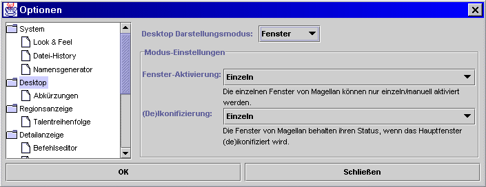
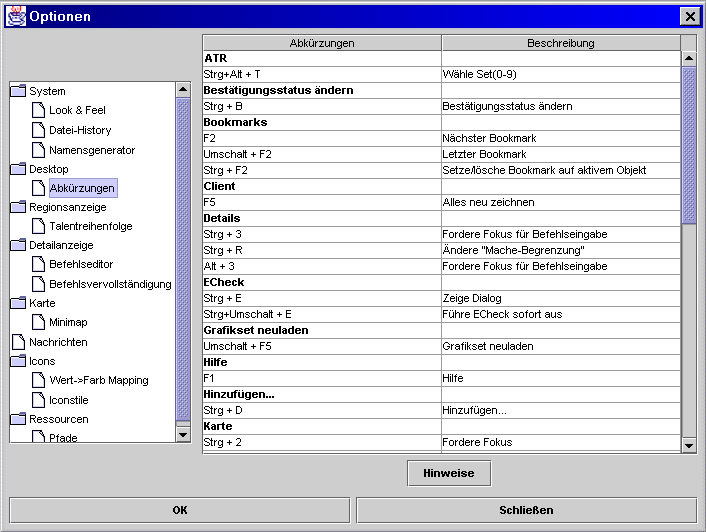

Hier stellt man den Desktop-Modus von Magellan ein.

Die verfügbaren Modi Splitpanes, Fenster und Layout sind in hier ausführlich erklärt.

Hier sind alle Shortcuts angezeigt, die innerhalb von Magellan Verwendung finden. Durch einen Doppelklick auf die gewünschte Option/Tastenkombination öffnet sich ein Fenster, in dem die neue Tastenkombination eingegeben werden kann.